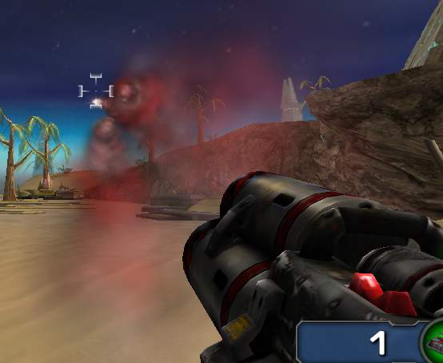

Eldhrin/Rocket InstaGib
Rocket InstaGib
A little more complicated to do than I imagined, but still seems to have come together a lot more quickly than I would have thought, given that I've got the majority of it done in two days, barring cosmetic changes. There must be something wrong with it, there's no way it could be this easy...
The concept...
...was simple, just make an InstaGib mutator which uses rocket launchers instead of shock rifles. Oh that's easy, I thought to myself. I'll just subclass RocketProj, make it always-lethal, then subclass RocketLauncher, make it launch my new kind of rocket, and then poke around in the InstaGib mutator to see how to get it to replace the weapons in the map. Well, that bit went smoothly enough, but it turns out weapons are more complicated than I thought.
How to make your own rocket launcher
Subclassing RocketLauncher seemed like the thing to do since I wanted all its functionality, but oh no, that doesn't work very well at all. Why not? Because the RocketLauncher code has explicit typecasts to RocketLauncher in it - most specifically to call SpawnProjectile. So guess what - it fires RocketProj instead of the new projectile I'd so carefully crafted.
A further complication is added by the fact that actually firing a weapon is handled by another class derived from WeaponFire, so I had to modify those as well. As it turns out, this isn't such a bad thing, but it was irritating at the time. RocketLauncher has two firing classes derived from ProjectileFire - one of them handles primary fire mode and launches a single rocket, while the other handles secondary fire mode and launches up to three rockets in two different patterns, as you all no doubt know.
So I thought of subclassing both of them. Big mistake - it ended up firing RocketProj again no matter what I did to the default properties. And why's that? Explicit typecasts again. Haven't the UT coders heard of type abstraction? So I ended up overriding so many methods that I ended up throwing my arms up in despair and just overriding almost every method in RocketLauncher. But hey, that's what overriding is for after all... and at least UnrealScript's methods are virtual by default.
How to make a rocket always kill people
First I had to get rid of the proportional splash damage. By default this is handled by a method of Actor called HurtRadius, which automatically tracks down and deals damage to all the suitable Actors in the vicinity of the specified location, based on the distance from that location. I, however, wanted to kill everything in the rocket's explosion radius. This, happily, is easy enough by making a new method called HurtRadiusConstant inside my projectile class, making it do pretty much the same thing as HurtRadius but without the proportional damage falloff calculation, and then call it with a suitably high amount of damage - say 250, a figure I picked out of the RedeemerProjectile code. I was kind of hoping to do it in a slightly less cludgy way by being able to call Actor.Kill() or something, but so far I haven't located such a method.
How to make it look different
At the moment, Rocket InstaGib games look a lot like using the Arena mutator with Rocket Launcher as the chosen weapon, because the InstaGib version of the rocket launcher
- doesn't InstaGib, it just kills people
- has precisely the same textures and explosion effects
I'd like to change all this, but I haven't worked out how yet. Well, explosion effects are simple enough if there's already a class which does it, just Spawn the thing (what do all those extra arguments for Spawn do anyway?) but at the moment there isn't, so I need to work out how to make Emitter classes which do what I want them to do - i.e. anything at all really. Must go hunting for a tutorial, or at least someone who knows how to use them. UDN doesnt' seem to be any help. Anyone? Oh well.
8th December 2002 - how to make it look different part two
So one of the most visual parts of the rocket is the smoke trail, right? I mean, it's not exactly something you don't see... therefore I figured I'd change that a bit, just to make sure that people notice they're playing with rockets which are considerably more dangerous than the usual kind - infinite numbers of them at that. As I may have mentioned, games with this mutator are noisy, albeit quieter than ones using Redeemer missiles (I tried that for a laugh - never again!)
Anyway, how to make the trail different? Well, XEffects.RocketTrailSmoke is a subclass of xEmitter, which is, it seems, the Digital Extremes particle emitter class, as distinct from Emitter which is the one provided by Epic. Why they couldn't use Epic's I have no idea, the feature sets of the two at the basic level seem similar. Maybe it's some hyper-optimised version or something, I can't tell as it's implemented in native code (note to self: check if Emitter is native or not. If it's not, that would explain a great deal, but would be very silly). So we either subclass RocketTrailSmoke and tweak it a bit, or subclass xEmitter, copy RocketTrailSmoke's defaultproperties (which are the only thing it contains, makes sense really as it's quite a simple effect so needs no extra UnrealScript) and modify them on a more extensive basis? I opted for the latter, as I was originally intended to make larger changes than I actually did. However, it does now mean that I'm not dependent on changes in RocketTrailSmoke which might possibly be implemented in future patches, although I'll probably need to keep an eye on it to see if they change anything for the better which I should copy.
So, to the business state of affairs. I wasn't sure exactly what I could do, but the two things which suggested themselves to me immediately were mucking about with the dispersion of the smoke trail, and of course the colour.
I changed mGrowthRate a little bit, which makes the trails a bit fatter at their older ends, although not all that much that I can tell, so this change isn't really important.
What is important is mColorRange. This is a two-element array containing R, G and B components, and it's a colour which is used to modify the colour of the texture used for the xEmitter's skin (xEmitter sprite particle textures are specified using the generic Skins array rather than anything added on, as Epic's system opted to do. Clearly their design goals were different). I was happy with the texture, and I don't like mucking about with them anyway (don't know how), so I just changed mColorRange(0) and mColorRange(1). As far as I can determine, xEmitter picks a random value from 0 to 1 for each particle, and interpolates between the two mColorRange values to see how much it should modify the particle texture by. Unsure what colour I really wanted, I randomly set mColorRange(0) to (R=50,G=210,B=0) and mColorRange(1) to (R=210,G=210,B=210). The 210 comes from the settings used for RocketTrailSmoke.
This produced a rather nice green and grey kind of trail, but I figured green was too indicative of poison gas rockets (which are really something I should implement at some stage I think) so I went for red, the standard colour of danger, and changed mColorRange(0) to (R=210,G=0,B=0). Here's what it looks like:

Instant-kill rockets with snazzy red smoke trails |
This screenshot is out of date, as I have now implemented team-coloured smoke trails in team games. Non-team games use red trails.
Once I've determined that it works on a LAN, I'll make it available for download. Some kind of stupidly open licence probably, I don't want to conflict too much with all the code I used from Epic and Digital Extremes, and someone might even be able to learn something from my scripting mess.
9th December 2002 - how to make it work with the Linux client
This doesn't seem to work... surely I should just be able to put the .u and .int file for the package into ~/.ut2003/System, right? Well it doesn't show up in the Mutators list! Argh! Tried /usr/games/ut2003/System as well and it didn't help any, neither did adding it to ServerPackages and EditPackages.
Bullet: I think you could have done all of it without building a new Weapon by modifing the exiting Rocket Launchers in CheckReplacement() and dealing lethal damage in NetDamage(). The problem with the Rocket Launcher using hardcoded projectiles is bad
but could have been resolved by subclassing and overwriting these functions